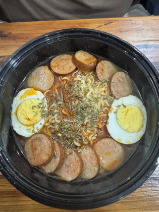
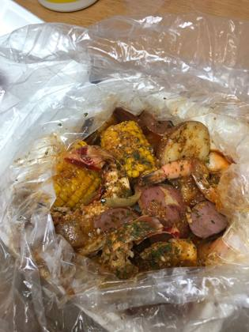

Bahamas
2 restaurants · 11 photos
NZ/AU ?

Boiling Point Seafood BoilsNassau · 8NZ/AU ?
Crabby Juice BahamasNassau · 3Every boil listing found · 3
Google Maps listings whose name says boil / crawfish / Cajun / crab etc. Swept 20 Oct 2026. Not all verified as bag boils; tap to open the listing.
Nassau · 3
- Boiling Point Seafood Boils Nassau · ★4.7 (18)
- Crabby Juice Bahamas Nassau · ★4.4 (41)
- Da Bag Seafood & Wings Nassau · ★5.0 (3) · temporarily closed